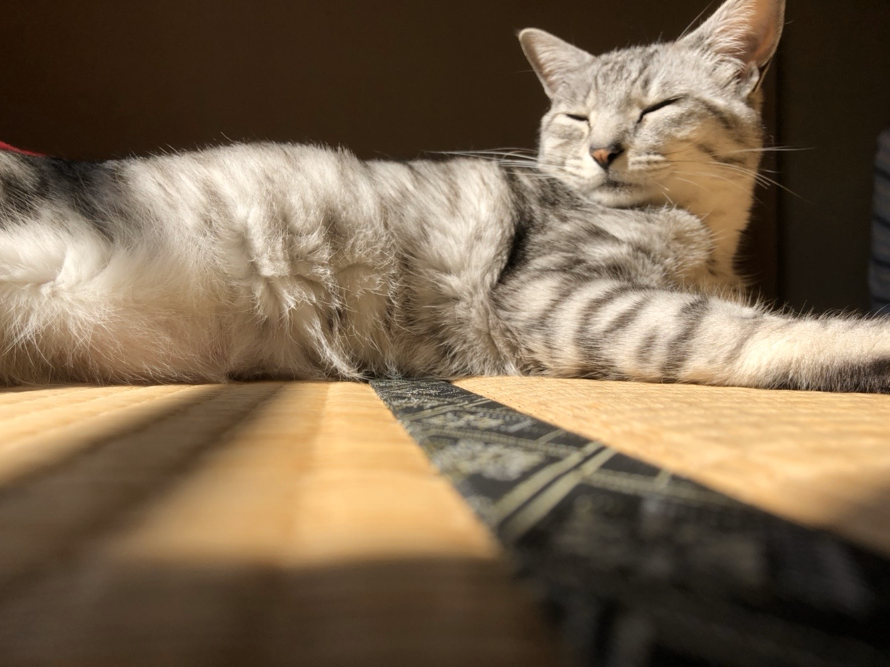

01 / 02
SELECTED WORKS
Gallery
その瞬間の光、表情、空気感。
少しずつ作品を増やしていきます。
MORE PHOTOS
新しい写真を追加すると、ここからギャラリーが広がっていきます。
ABOUT
02日常を、
少し特別に。
何気ない日常の中にある表情、光、空気感。 その瞬間にしか撮れないものを、自分の視点で残していく写真ポートフォリオです。
Photography / Everyday / Moments
LET'S CONNECT